Topic modeling & représentations vectorielles
Paris Dauphine - PSL
Aujourd’hui, nous allons au-delà de l’analyse de mots isolés pour répondre à deux questions marketing fondamentales :
💡 L’enjeu
Ces deux approches sont la porte d’entrée vers les analyses les plus avancées et les plus puissantes du marketing digital, notamment les LLMs.
Imaginez que vous avez collecté 10 000 avis sur votre produit.
Les lire un par un est impossible. Comment savoir rapidement quels sont les 5 ou 10 grands thèmes de satisfaction ou d’insatisfaction ?
C’est le rôle du Topic Modeling.
Il s’agit en général d’une méthode d’apprentissage non supervisé :
elle découvre les thèmes sans qu’on les lui dise à l’avance.
L’algorithme le plus célèbre pour cela est le LDA (Latent Dirichlet Allocation) (Blei, Ng, and Jordan 2003).
Variantes :
- STM (Structural Topic Model) (Roberts et al. 2013) permet d’incorporer des covariables (ex. date, genre, segment client).
- BERTopic (Grootendorst 2022) s’appuie sur les embeddings modernes (BERT) et un clustering pour produire des thèmes plus cohérents.
- Seeded LDA : versions guidées où l’on fournit des mots-clés pour orienter les thèmes.
Imaginons que LDA est un bibliothécaire stagiaire à qui on demande de classer 10 000 articles en 5 thèmes qu’il doit inventer lui-même.
Le stagiaire lit et remarque que certains mots apparaissent souvent ensemble.
À la fin, un thème n’est qu’un “sac de mots” qui ont tendance à cohabiter.
Maintenant, il prend chaque article et regarde les mots qu’il contient.
À la fin, un document est simplement un mélange de ces thèmes.
Ce que LDA donne au final
L’algorithme devine automatiquement les thèmes cachés dans les textes et la recette de chaque document. C’est un trieur automatique ultra-performant.
La littérature marketing montre des usages variés et utiles du topic modeling.
Une revue de 61 études confirme son adoption et trace des pistes de recherche (Reisenbichler and Reutterer 2019).
💡 Une fois le modèle entraîné, on peut explorer les thèmes avec des outils interactifs :
Chaque bulle représente un thème.
Les mots les plus fréquents apparaissent à droite.
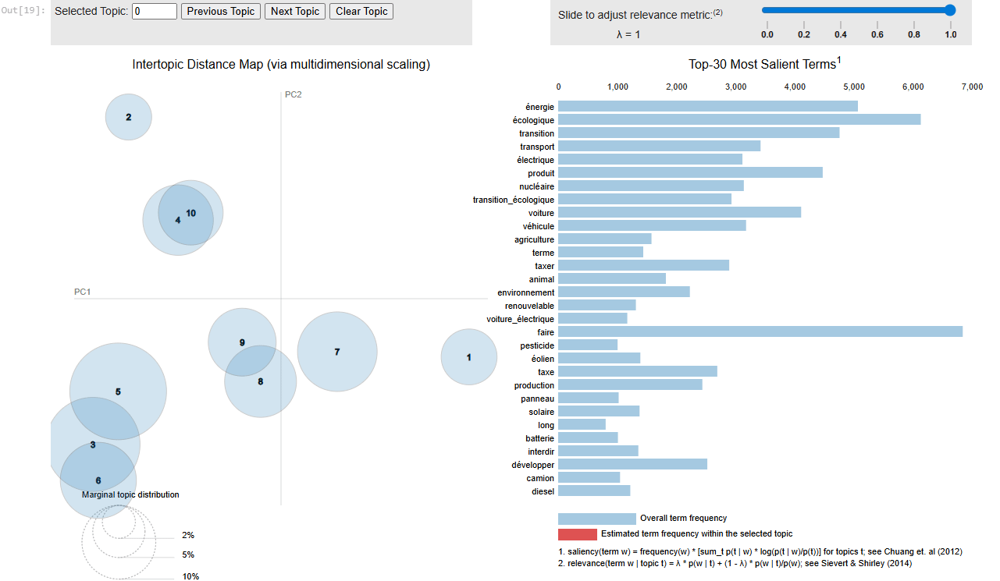
Message clé : LDA est excellent pour cartographier des thèmes.
Dès que le contexte et la nuance deviennent critiques, on gagne à passer vers STM / BERTopic, puis embeddings & LLMs.
De nombreuses illustrations de cette section viennent de
Jay Alammar – The Illustrated Word2Vec.
Jusqu’à présent, pour transformer le texte en chiffres, on a surtout compté les mots (approche Bag-of-Words ou TF-IDF).
Le problème : cette approche est “naïve”. Pour elle, les mots “roi”, “reine” et “château” sont aussi différents les uns des autres que les mots “roi” et “camion”. Elle ne comprend pas que certains mots sont sémantiquement proches.
La question de recherche : comment faire pour qu’un ordinateur comprenne que “excellent” est plus proche de “superbe” que de “médiocre” ?
Avant de voir comment une machine comprend les mots, imaginons comment représenter une personne en chiffres.
C’est le principe de l’embedding (ou “plongement”).
Un test peut donner un score unique, par exemple sur l’axe introversion/extraversion.
Ce score devient la première coordonnée du “vecteur de personnalité”.
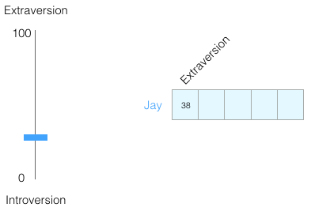
Une seule dimension est insuffisante. Ajoutons un autre trait, noté de -1 (introverti) à +1 (extraverti).
On obtient un vecteur à deux dimensions, qui a une direction et une longueur, et capture plus d’informations.
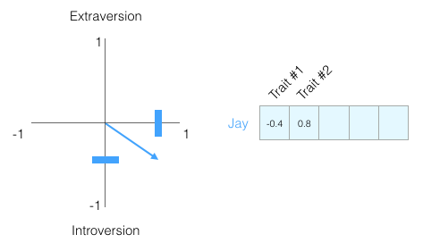
Les tests comme le Big Five utilisent au moins 5 dimensions. En machine learning, on peut en avoir des milliers La personnalité devient un vecteur de nombres, chaque valeur représentant un score.
L’idée fondamentale de l’embedding
Un concept complexe (une personne, bientôt un mot) peut être représenté par un vecteur numérique.
Avantage : les machines peuvent mesurer les similarités en comparant ces vecteurs.
Maintenant que chaque personne est un vecteur de nombres, on peut utiliser un outil mathématique simple pour calculer à quel point elles sont “proches” en termes de personnalité : la similarité cosinus.
L’idée n’est pas de mesurer la distance entre les points, mais plutôt l’angle entre les flèches (vecteurs).
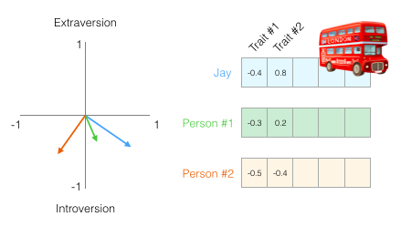
La fonction cosine_similarity nous donne un score entre -1 (opposés) et 1 (identiques).
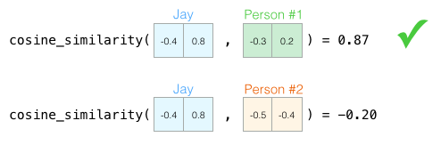
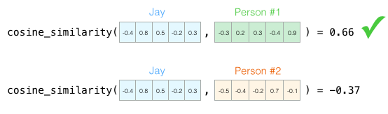
On voit que Jay est bien plus similaire à la Personne #1 qu’à la Personne #2, que ce soit avec 2 ou 5 dimensions !
L’avantage clé
Peu importe le nombre de dimensions (2, 5, plusieurs centaines ou milliers pour les modèles de langue !), la similarité cosinus nous donne un score unique et fiable pour quantifier la ressemblance entre deux concepts. C’est la base de nombreuses applications : moteurs de recommandation, recherche sémantique… et bien plus encore.
Au début des années 2010, une équipe de chercheurs chez Google a proposé un algorithme révolutionnaire : Word2Vec (Mikolov et al. 2013).
Autrement dit, un mot n’a pas de sens isolé :
il prend son sens dans les contextes où il apparaît,
c’est-à-dire les mots qui l’entourent (Harris 1954).
On peut exprimer cela simplement par l’idée que la probabilité d’un mot dépend de ses voisins immédiats :
\[ P(\text{mot} \mid \text{contexte}) \]
où le contexte est constitué des mots voisins dans la phrase.
L’idée fondamentale :
“You shall know a word by the company it keeps” (Firth 1957).
En pratique, Word2Vec entraîne un petit réseau de neurones à prédire les mots du contexte à partir d’un mot central (ou l’inverse).
Les vecteurs associés aux mots s’ajustent pendant l’apprentissage, jusqu’à ce que ceux qui apparaissent dans des contextes similaires se retrouvent proches dans l’espace.
Word2Vec ne “comprend” pas le sens comme un humain :
il exploite uniquement les régularités statistiques des cooccurrences de mots.
Chaque mot est représenté par un vecteur de nombres (par ex. 50 ou 300 dimensions).
Pris séparément, ces valeurs n’ont pas de sens pour nous.
Mais en comparant plusieurs mots, on voit apparaître des motifs de similarité.
💡 Les embeddings capturent des régularités invisibles, uniquement à partir des contextes.
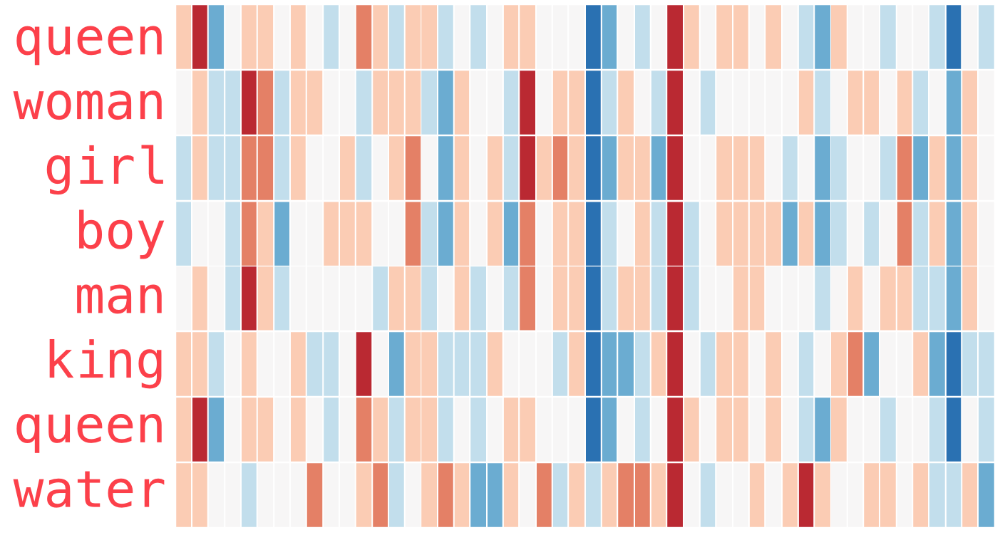
Les vecteurs de mots se combinent algébriquement.
Ce n’est pas magique : la géométrie des vecteurs encode des relations sémantiques et syntaxiques.
👉 Avec des bibliothèques comme Gensim en python ou word2vec en R, on peut réellement calculer ces analogies et retrouver les mots les plus proches.
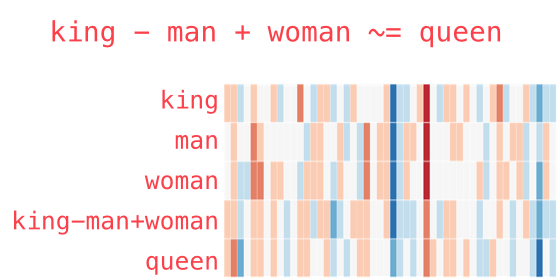
Moteurs de recommandation : si un client a aimé un produit décrit par certains mots, on peut lui recommander des produits décrits par des mots aux vecteurs similaires.
Analyse de sentiment : regrouper les avis clients exprimés différemment (super ≈ génial ≈ excellent), pour mieux suivre la satisfaction.
Segmentation clients : utiliser le langage des clients (feedback, SAV, forums) pour créer des clusters basés sur les mots et expressions employés.
Étude de marque et positionnement : comparer les associations implicites entre marques (Nike, Adidas, Puma) et concepts (performance, lifestyle, mode).
Détection de tendances : suivre l’évolution de mots-clés (durable, écologique) pour identifier les thèmes qui montent.
Base des modèles modernes : transformer les mots en vecteurs est la fondation sur laquelle reposent tous les modèles de langage modernes, y compris les LLMs.
L’idée fondamentale : la signification d’un mot se comprend à partir des mots qui apparaissent fréquemment autour de lui.
Un petit réseau de neurones est entraîné à résoudre une tâche simple de prédiction, répétée des millions de fois sur un grand corpus (comme Wikipedia).
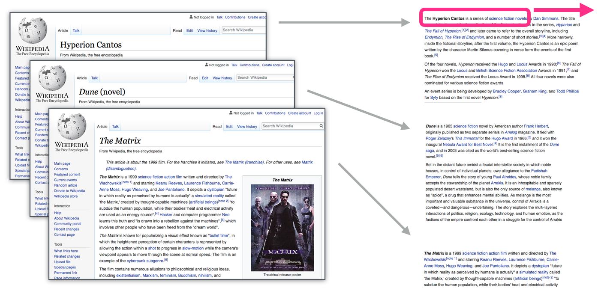
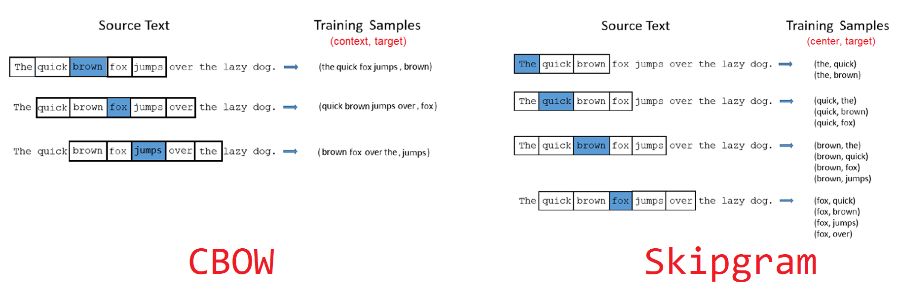
GloVe (Pennington, Socher, and Manning 2014)
Basé sur une grande matrice de cooccurrences factorisée (SVD).
→ Plus “statistique” que neuronal.
FastText (Bojanowski et al. 2017)
Améliore Word2Vec en apprenant aussi des vecteurs pour les n-grams de caractères (utile pour variations orthographiques).
ELMo (Peters et al. 2018)
Premier modèle à produire des vecteurs contextualisés :
le vecteur d’un mot dépend de la phrase.
→ Prépare le terrain pour les Transformers (BERT, GPT…).
Vecteurs statiques : un mot = un seul vecteur, appris une fois pour toutes.
→ banque (finance vs rivière) est toujours représenté par le même vecteur.
Pas de contexte global : Word2Vec ne regarde qu’une petite fenêtre (ex. ±5 mots).
→ Impossible de capter des dépendances à longue distance.
Pas de prise en compte de l’ordre : l’embedding ignore la syntaxe exacte d’une phrase.
Peu flexible : une fois entraînés, les vecteurs ne s’adaptent pas à de nouveaux usages du langage.
💡 Résultat : les embeddings classiques captent des proximités sémantiques utiles, mais ne peuvent pas distinguer les sens multiples d’un mot.
Vers les Transformers et l’attention
Les modèles modernes (Transformers) introduisent le mécanisme
d’attention, qui permet de :
➡️ Prochaine séance : comprendre comment l’attention révolutionne les modèles de langage.
Comment fonctionne le LDA ?
LDA imagine que chaque document est écrit en suivant une recette probabiliste : documents → thèmes → mots.
🔎 Étapes simplifiées
On choisit une proportion de thèmes pour le document (θ).
→ ex. Avis hôtel : 50% Service, 30% Chambre, 20% Prix.
Pour chaque mot du document :
Répété des milliers de fois, cela reconstitue le texte.
En observant beaucoup de textes, l’algorithme “devine” les thèmes.
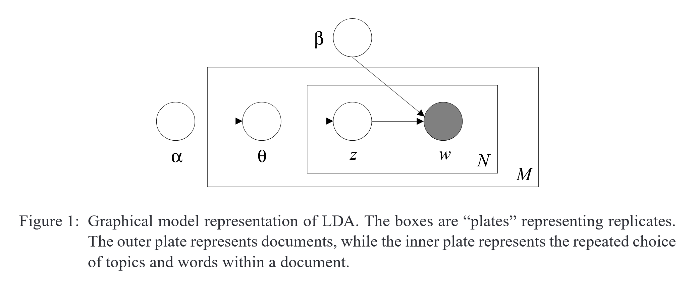
Dictionnaire des symboles LDA